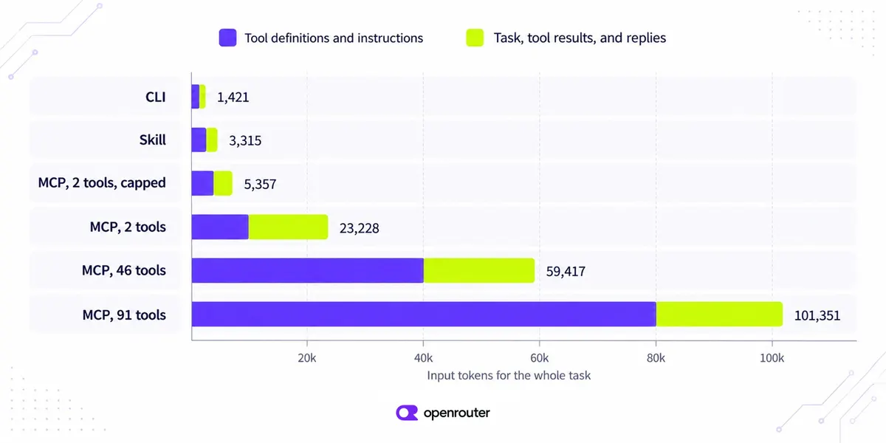

工具成本：MCP 貴在定義與結果，模型只是其次
導讀原文：OpenRouter 部落格〈MCP vs CLI vs Skills: What Each Costs in Context〉——自家產品實測，用一道 GitHub 題目比較三種接法的 token 與帳單
三種接法在同一道 GitHub 題上都答對，input token 差 42 倍、成本差 17 倍：錢主要不在模型，在每次請求都得先讀完的工具定義，與回得太多太雜的工具結果。
三種做法給模型的是同一種東西：一個能動手的工具。差別在動手之前，它先讀到什麼。
MCP 把每個工具的名稱、描述與 JSON schema 塞進每一次請求。CLI 只給一個 shell 工具，加一句「gh 已安裝並登入」。
技能走中間路線：平時只有一行索引，等任務真的需要，才把那份 1,492 字元的 gh 食譜讀進來。
也所以技能比純 CLI 貴：食譜讀進來就留在對話裡。模型熟的 CLI 不必配技能，自家 CLI 才需要。
| 接法 | 動手前讀到 | 動手時看到 |
|---|---|---|
| MCP 伺服器 | 每個工具的名稱、描述與 JSON schema，而且每次請求都重送 | 工具結果，形狀由伺服器決定 |
| CLI | 一個 shell 工具，加一句「這支 CLI 存在、已登入」 | 指令輸出，可用 --json 之類的旗標自己塑形 |
| 技能 | 每個技能一行描述 | 先讀一次 SKILL.md，之後是指令輸出 |
本站整理自原文的並列對照表；三列互不替代，也不代表先後順序。
所以第一個問題不是哪個比較強，而是這個模型認不認識這支工具：認識就只付一句話。
同一道題，六種接法的帳單
題目固定：cli/cli 的最新 release 是哪一版，以及標記 bug 的三個近期 issue。六種接法各跑三次，取中位數。
Sonnet 5.5 上六種全部答對，但整段任務的 input token 從 1,421 到 101,351 都有。
CLI 1,421、技能 3,315、載入 46 個預設工具的 MCP 59,417。成本只差 17 倍而非 42 倍。
因為輸出 token 單價是輸入的五倍：CLI 那 463 個輸出 token 就吃掉 $0.0046，佔它整筆帳單約六成。
| 接法 | Sonnet 5.5 token | Sonnet 5.5 成本／任務 | GPT-6 Luna token | Gemini 3.8 Flash token |
|---|---|---|---|---|
| CLI | 1,421 | $0.0075 | 627 | 5,292 |
| 技能 | 3,315 | $0.0118 | 1,542 | 6,107 |
| MCP，2 工具 | 23,228 | $0.0552 | 14,479 | 17,267 |
| MCP，46 預設 | 59,417 | $0.1274 | 116,282 | 35,409 |
| MCP，91 全部 | 101,351 | $0.2113 | 135,238 | 53,289 |
| MCP，2 工具，截斷 | 5,357 | $0.0191 | 2,726 | 2,943 |
→ 可橫向滑動
樣本：cli/cli 單一題目、GitHub MCP server v2.0.2、gh CLI 與一份 1,492 字元的 gh 技能；2026-10-20 各跑三輪取中位數，token 為跨請求累加的 input token。Haiku 5.5 未列（原文指它多跑幾輪，改採 Sonnet 的 token 與計費）。OpenRouter 自家量測，無第三方驗證。

兩個來源會分頭長大：工具清單隨每一次請求重送，工具結果則留在視窗裡被後面每一輪重讀。
原文的估算很具體：一次 get_latest_release 回傳 42,182 字元，其中 87% 在描述 22 個下載檔。
模型只要 tag 與日期，那是 gh release view 兩個欄位的量；這一筆就約 20,400 個 token，比 46 個定義加起來還多。
三個旋鈕，與它們各自的失效條件
先確認一件事：同一組 46 個工具，每次請求的 token 數跟著模型與供應商跑，Claude 的兩款都是 19,436 個 token。
基準＝GitHub MCP server v2.0.2 的 46 個預設工具，單次請求的 prompt token 增量；Claude 指 Haiku 5.5 與 Sonnet 5.5（同值），Studio／Vertex 指 Google AI Studio 與 Google Vertex。原文未給這組的測量日期（任務表為 2026-10-20）。本站重繪，原文以文字敘述。
旋鈕一是縮範圍。只留任務要用的 2 個工具，第一個請求從 19,487 掉到 1,406，但整段任務還是 23,228。
範圍的單位是工具集：Haiku 5.5 上 issues 那組 10 個工具加 5,801 個 token，只有一個工具的 users 加 619。
因為定義只付開頭那一次，工具結果卻會留在對話裡，跟著後面每一次請求重送。真正的大戶是結果。
旋鈕二是裁結果。把回傳截到 4,000 字元，整段任務降到 5,357，三輪全對——只因 tag 與日期剛好排在前面。
這一招很脆：同一招再疊上 Tool Search，Gemini 3.8 Flash 與 Haiku 5.5 三輪各只對一輪，Gemini 還撞到 12 次請求上限。
穩一點的做法是砍欄位：list_issues 只要編號、標題與建立日期，回傳就從 8,336 字元縮到 714。
不指定大小，模型自己決定：46 或 91 個工具載入的六輪裡，有四輪 GPT-6 Luna 要了 100 個 issue 全文，回傳 281,963 字元。
旋鈕三是延後載入。工具標上 defer_loading、再加一個 tool_search，46 個工具在搜尋前的成本只剩 578 個 token（Claude 模型）。
整段任務：Sonnet 5.5 從 59,417 降到 30,334；91 個延後工具只比 46 個多 1,281，而全部載入 91 個要多約 42,000。
但它不砍結果，也可能更貴。Haiku 5.5 的 46 個延後反而升到 154,623：它向 list_issues 要了不存在的欄位，重試三四次。
Gemini 3.8 Flash 也從 35,409 微升到 37,568。原文建議最常用的三到五個工具留著別延後，其餘才 defer。
原文的門檻寫得清楚：工具定義超過約 10,000 個 token、或工具數約 10 個，就該開始考慮延後載入。
還有一個實務坑：Chat Completions 不接受 tool_search，會直接回 400，得先搬到 Responses 或 Messages API。
快取也不是解：它只降單價、不縮視窗。原文指 2026 年 10 月起，Haiku 與 Luna 的快取輸入是原價的十分之一。
原文自己的結論最省字：能用 CLI 就用 CLI；不能，就用 MCP，並把工具範圍與結果大小一起縮。
它補了判斷條件：agent 跑得動指令就用 CLI；沒有 shell、或需要伺服器本身的認證與權限，才輪到 MCP。
還有一句免責很重要——這是一個伺服器、一道題的量測，選型前先拿自己的 MCP 伺服器跑一次那支腳本。
（編輯觀點：這是 OpenRouter 賣自家 Tool Search 的實測，變數控得不錯，但只有一個伺服器、一道題，別直接外推。）
帶走三件事
能用 CLI 就用 CLI。模型已認識的工具最便宜，1,421 對 59,417。
MCP 要同時縮範圍與結果。只砍工具數，第一個請求變小，結果那塊照樣計費。
Tool Search 先量再開。Haiku 與 Gemini 實測變貴，同一招不通用。
導讀為本站編輯內容（AI 摘解自原文與館藏重點，非官方文件）；實測資料為 OpenRouter 自家量測（Tool Search 亦為其產品），單一伺服器、單一任務，無第三方驗證。圖解 A／B 為本站整理自原文表格，圖解 C 為本站重繪。內容經對照原文的獨立事實審查後發布。